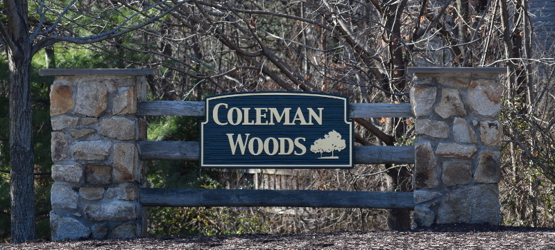

Welcome to Coleman Woods, a small and well-maintained community of eleven townhouses located in Columbia, MD. The location provides easy access to major highways such as 95, 32 and 29, as well as all that Columbia and the surrounding area have to offer in the way of shopping and other amenities.
The two-car garage townhouses provide convenience, security and privacy with all living space on the second and third floors. Rooms include three bedrooms, two and one-half baths, and an open-concept second floor with a spacious eat-in kitchen. Storage is plentiful with a large utility room on the garage level and closets throughout, along with a full-size laundry closet on the second level. Many of the townhouses have decks and patios for outdoor living space.
Both Comcast and Verizon FiOS cable, telephone and Internet service are available. In addition, over-the-air TV reception of D.C. and Baltimore channels is excellent.
If you would like to learn more about the community, or if you need assistance with a community matter, please email contact@cwtca.org.